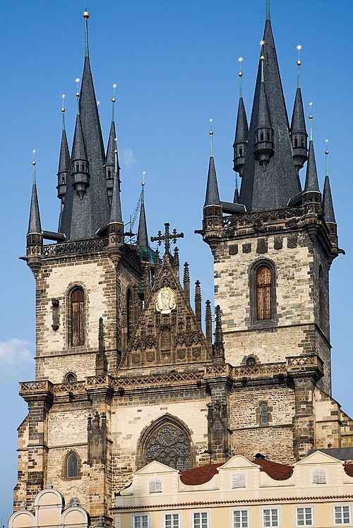

Týn templom (Chrám Matky Boží před Týnem)
A Týn templomot az Óvárosi térről legelőször a két tornyáról ismerjük fel. A magas, hegyes sisakok és a körülöttük emelkedő kisebb tornyocskák különösen erős sziluettet adnak. A templom alsó része részben a tér házai mögé húzódik. Ettől a hatalmas épület úgy jelenik meg, mintha a polgárváros sűrű szövetéből nőne ki.
A gótikus templom építése a tizennegyedik század közepén kezdődött. A következő évszázadok vallási és politikai változásai jelentősen alakították szerepét. A huszita korszakban a kelyhes mozgalom egyik fontos központja volt. A tér felől szemlélt tornyok így nemcsak építészeti jelképek, hanem vallási viták és hatalmi fordulatok tanúi is.
A név a közeli Týn, vagyis az egykori kereskedőudvar környezetére utal. A templom története ezért a nemzetközi kereskedelmi várossal is összekapcsolódik. A környéken áruk, idegen nyelvek és városi kapcsolatok találkoztak. Érdemes a szent épület mögé odaképzelni ezt a nagyon is gyakorlatias, mozgalmas közeget.
Ha beléphetünk, a gótikus szerkezet és a későbbi barokk berendezés együttese fogad. A magas belső térben az oltárok és festmények új hangsúlyokat alakítanak ki. Figyeljük meg, milyen más képet ad az épület belülről, mint a sötét toronysisakok alapján várnánk. A hosszú használat itt különböző korok tárgyait és formáit kapcsolta össze.
A templomban nyugszik Tycho Brahe dán csillagász, aki II. Rudolf udvarában dolgozott. Sírja a vár tudományos világát köti össze az óvárosi templommal. Brahe megfigyelései a modern csillagászat kibontakozásában is jelentős szerepet játszottak. A síremlék előtt így a vallási környezetben a tudomány történetének egyik fontos alakjával is találkozunk.
Kifelé érdemes ismét a tornyokra nézni, és összehasonlítani őket egymással. A látszólag szimmetrikus képben apró eltéréseket is észrevehetünk. A templom bejáratát a házak közötti átvezetés miatt nem mindig azonnal találja meg a látogató. Ha megvan a helyes út, a tér zajából való belépés különösen erős váltást adhat a sétának.
50.087600, 14.422700